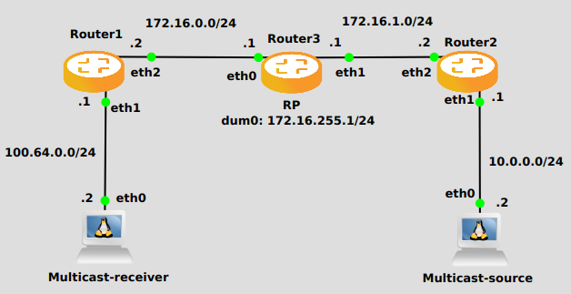

PIM – Protocol Independent Multicast
VyOS supports PIM-SM as well as IGMP v2 and v3
PIM must be configured in every interface of every participating router. Every router must also have the location of the Rendevouz Point manually configured. Then, unidirectional shared trees rooted at the Rendevouz Point will automatically be built for multicast distribution.
Traffic from multicast sources will go to the Rendezvous Point, and receivers will pull it from a shared tree using IGMP.
Multicast receivers will talk IGMP to their local router, so, besides having PIM configured in every router, IGMP must also be configured in any router where there could be a multicast receiver locally connected.
VyOS supports both IGMP version 2 and version 3 (which allows source-specific multicast).
PIM-SM - PIM Sparse Mode
If PIM has the a choice of ECMP nexthops for a particular RPF, PIM will cause S,G flows to be spread out amongst the nexthops. If this command is not specified then the first nexthop found will be used.
If PIM is using ECMP and an interface goes down, cause PIM to rebalance all S,G flows across the remaining nexthops. If this command is not configured PIM only modifies those S,G flows that were using the interface that went down.
Modify the join/prune interval that PIM uses to the new value. Time is specified in seconds.
The default time is 60 seconds.
If you enter a value smaller than 60 seconds be aware that this can and will affect convergence at scale.
Modify the time out value for a S,G flow from 1-65535 seconds. If choosing a value below 31 seconds be aware that some hardware platforms cannot see data flowing in better than 30 second chunks.
When processing packets from a neighbor process the number of packets incoming at one time before moving on to the next task.
The default value is 3 packets.
This command is only useful at scale when you can possibly have a large number of PIM control packets flowing.
When PIM receives a register packet the source of the packet will be compared to the prefix-list specified, and if a permit is received normal processing continues. If a deny is returned for the source address of the register packet a register stop message is sent to the source.
Modify the time that pim will register suppress a FHR will send register notifications to the kernel.
In order to use PIM, it is necessary to configure a RP for join messages to be sent to. Currently the only methodology to do this is via static rendezvous point commands.
All routers in the PIM network must agree on these values.
The first ip address is the RP’s address and the second value is the matching prefix of group ranges covered.
Modify the time out value for a S,G flow from 1-65535 seconds at RP. The normal keepalive period for the KAT(S,G) defaults to 210 seconds. However, at the RP, the keepalive period must be at least the Register_Suppression_Time, or the RP may time out the (S,G) state before the next Null-Register arrives. Thus, the KAT(S,G) is set to max(Keepalive_Period, RP_Keepalive_Period) when a Register-Stop is sent.
If choosing a value below 31 seconds be aware that some hardware platforms cannot see data flowing in better than 30 second chunks.
See RFC 7761 Section 4.1 for details.
When sending PIM hello packets tell PIM to not send any v6 secondary addresses on the interface. This information is used to allow PIM to use v6 nexthops in it’s decision for RPF lookup if this option is not set (default).
On the last hop router if it is desired to not switch over to the SPT tree configure this command.
Optional parameter prefix-list can be use to control which groups to switch or not switch. If a group is PERMIT as per the prefix-list, then the SPT switchover does not happen for it and if it is DENY, then the SPT switchover happens.
Specify a range of group addresses via a prefix-list that forces PIM to never do SSM over.
Interface specific commands
Automatically create BFD session for each RIP peer discovered in this interface. When the BFD session monitor signalize that the link is down the RIP peer is removed and all the learned routes associated with that peer are removed.
If optional profile parameter is used, select a BFD profile for the BFD sessions created via this interface.
Set the DR Priority for the interface. This command is useful to allow the user to influence what node becomes the DR for a LAN segment.
Set the PIM hello and hold interval for a interface.
Tell PIM that we would not like to use this interface to process bootstrap messages.
Tell PIM that we would not like to use this interface to process unicast bootstrap messages.
IGMP - Internet Group Management Protocol)
Configure watermark warning generation for an IGMP group limit. Generates warning once the configured group limit is reached while adding new groups.
Interface specific commands
Use this command to allow the selected interface to join a multicast group defining the multicast address you want to join and the source IP address too.
Use this command to configure in the selected interface the IGMP host query interval (1-1800) in seconds that PIM will use.
Use this command to configure in the selected interface the IGMP query response timeout value (10-250) in deciseconds. If a report is not returned in the specified time, it will be assumed the (S,G) or (*,G) state RFC 7761 Section 4.1 has timed out.
Use this command to define in the selected interface whether you choose IGMP version 2 or 3.
The default value is 3.
Example
In the following example we can see a basic multicast setup:
{kind=link}
Router 1
set interfaces ethernet eth2 address '172.16.0.2/24'
set interfaces ethernet eth1 address '100.64.0.1/24'
set protocols ospf area 0 network '172.16.0.0/24'
set protocols ospf area 0 network '100.64.0.0/24'
set protocols igmp interface eth1
set protocols pim interface eth1
set protocols pim interface eth2
set protocols pim rp address 172.16.255.1 group '224.0.0.0/4'
Router 3
set interfaces dummy dum0 address '172.16.255.1/24'
set interfaces ethernet eth0 address '172.16.0.1/24'
set interfaces ethernet eth1 address '172.16.1.1/24'
set protocols ospf area 0 network '172.16.0.0/24'
set protocols ospf area 0 network '172.16.255.0/24'
set protocols ospf area 0 network '172.16.1.0/24'
set protocols pim interface dum0
set protocols pim interface eth0
set protocols pim interface eth1
set protocols pim rp address 172.16.255.1 group '224.0.0.0/4'
Router 2
set interfaces ethernet eth1 address '10.0.0.1/24'
set interfaces ethernet eth2 address '172.16.1.2/24'
set protocols ospf area 0 network '10.0.0.0/24'
set protocols ospf area 0 network '172.16.1.0/24'
set protocols pim interface eth1
set protocols pim interface eth2
set protocols pim rp address 172.16.255.1 group '224.0.0.0/4'